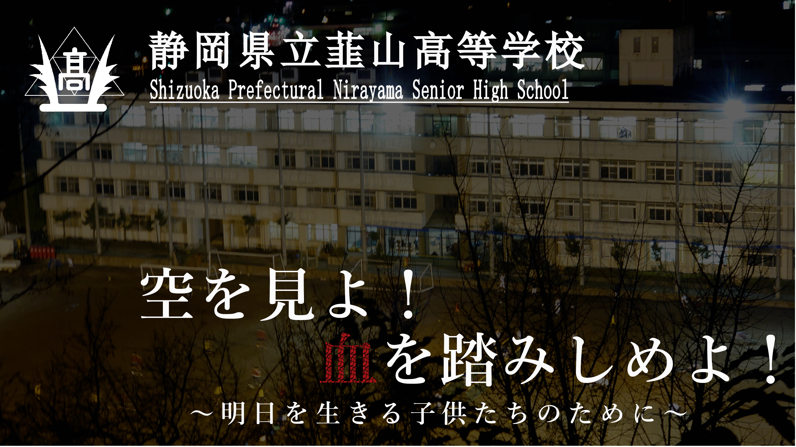
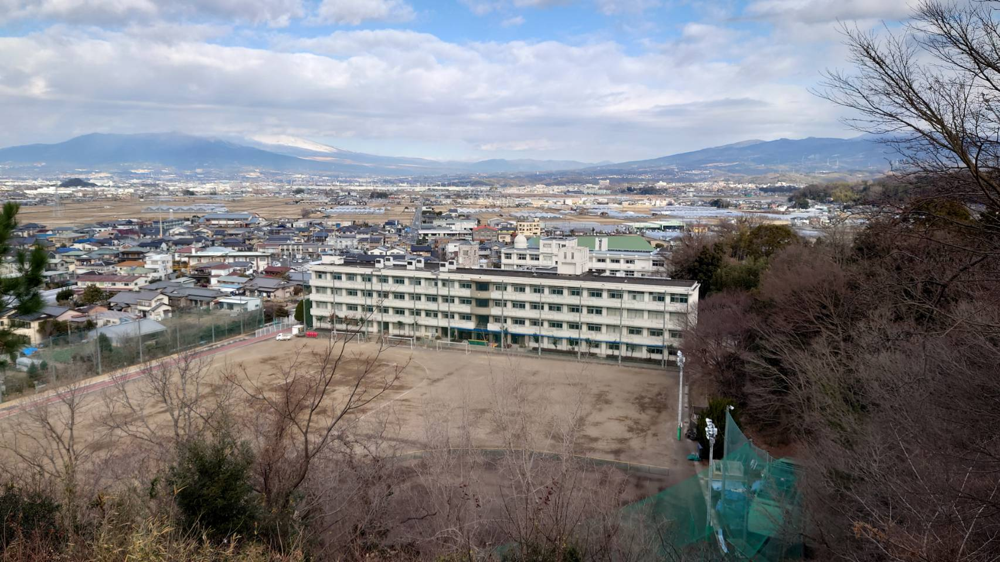
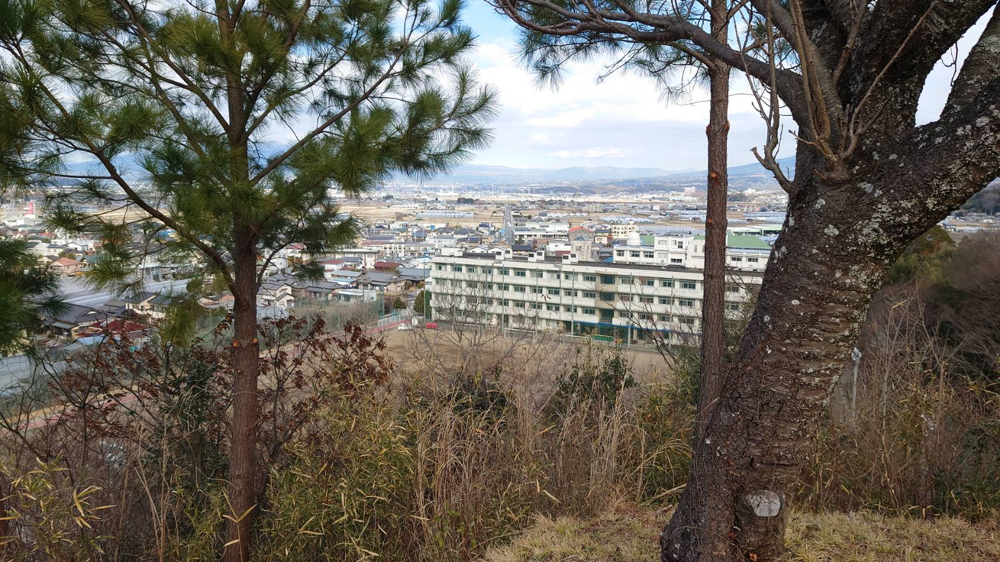
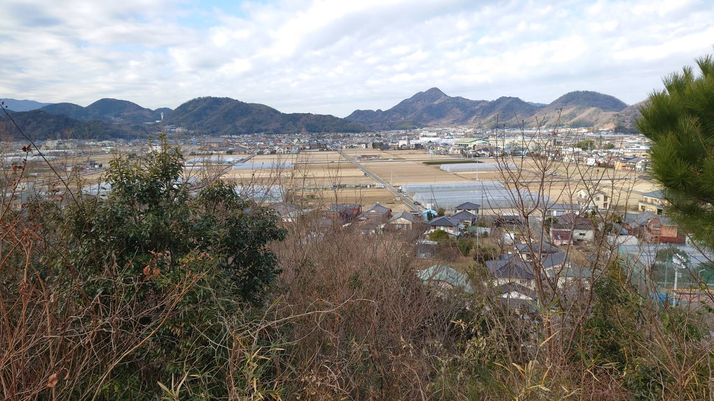
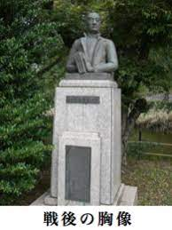

- 
- 
- 

仮想高校について
明治６年、足柄県韮山市庁下の仮研究所として創立。
その後、度重なる学制改変より明治34年に韮山中となるまで14回の校名改称。昭和23年の学制改革で現在の校名となる。平成25年度には創立１４０周年を迎えた県内最古の公立校。

教育目標
幕末の代官であり、本校学祖である江川太郎左衛門（坦庵）が座右の銘にした「忍」の精神と自由闊達、文武両道の校風をもとに、自ら思考し、自ら実践することをモットーとし、以下の３点を目指す。
- ・高い志と優れた知性、健やかな心身を育み、将来の国家・社会を担うリーダーとして人類の発展に貢献し、地域及び国際社会で活躍する人材（人間）を育成する。
- ・普通科並びに理数科における一層の特色化及び多様なニーズに応じた教育課程の実践研究、きめ細かな指導助言のスキルアップを計画的に推進する。
- ・少子高齢、地域創生という課題を踏まえ、東部・伊豆地域の将来を担う人材育成を図り、地域貢献できる教育環境を醸成する。